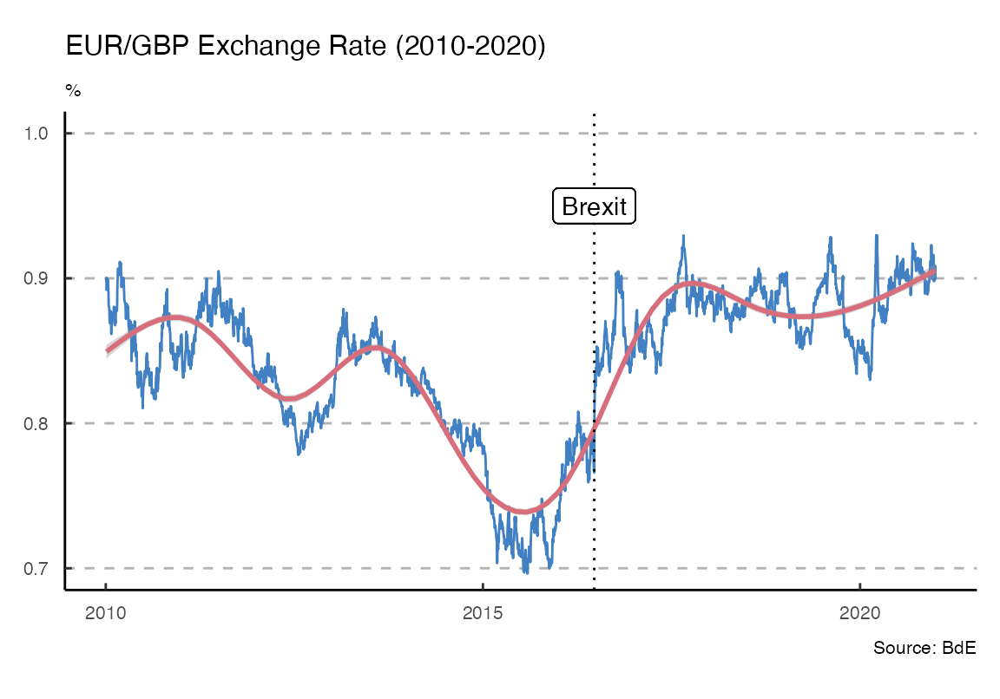
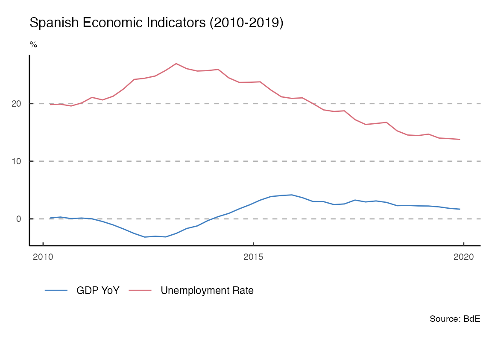
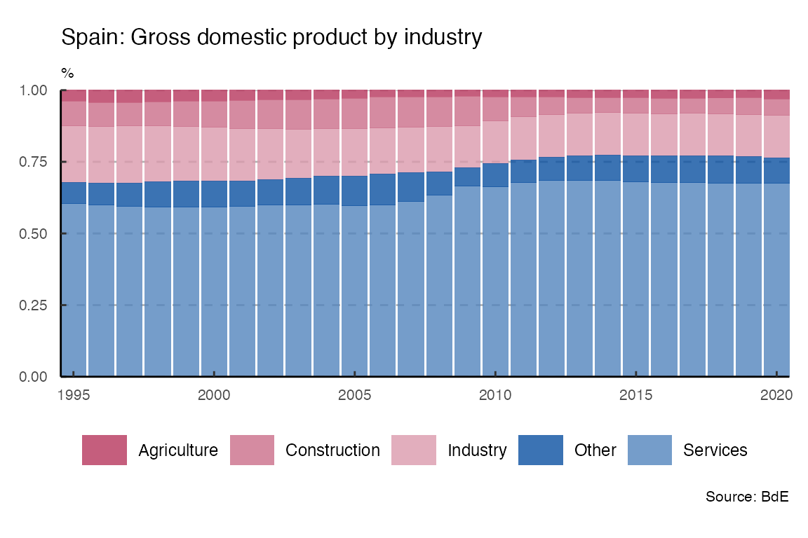

tidyBdE is an API package that helps to retrieve data from Banco de España. The data is provided as tibble and the package tries to guess the format of every time-series (dates, characters and numbers).
Search series
Banco de España (BdE) provides several time-series, either produced by the institution itself or compiled for another sources, as Eurostat or INE.
The basic entry point for searching time-series are the catalogs (indexes) of information. You can search any series by name:
library(tidyBdE)
# Search GBP on "TC" (exchange rate) catalog
XR_GBP <- bde_catalog_search("GBP", catalog="TC")
XR_GBP[c(2,5)]
#> # A tibble: 1 x 2
#> Numero_secuencial Descripcion_de_la_serie
#> <dbl> <chr>
#> 1 573214 Tipo de cambio. Libras esterlinas por euro (GBP/EUR).Datos …Note that BdE files are only provided in Spanish, for the time being, the organism is working on the English version. By now, search terms should be provided in Spanish in order to get search results.
After we have found our series, we can load the series for the GBP/EUR exchange rate using the sequential number reference (Numero_Secuencial) as:
# Load tidyverse for better handling
library(tidyverse)
time_series <- bde_series_load(573214, series_label = "EUR_GBP_XR") %>%
filter(Date >= "2010-01-01" & Date <= "2020-12-31") %>%
drop_na()Plot series
The package also provides a custom ggplot2 theme based on the publications of BdE:
ggplot(time_series, aes(x = Date, y = EUR_GBP_XR)) +
geom_line(colour = bde_vivid_pal()(1)) +
geom_smooth(method = "gam", colour = bde_vivid_pal()(2)[2]) +
labs(title = "EUR/GBP Exchange Rate (2010-2020)",
subtitle = "%",
caption = "Source: BdE") +
geom_vline(xintercept = as.Date("2016-06-23"),
linetype = "dotted") +
geom_label(aes(
x = as.Date("2016-06-23"),
y = .95,
label = "Brexit"
)) +
coord_cartesian(ylim = c(0.7, 1)) +
theme_bde()
The package provides also several “shortcut” functions for a selection of the most relevant macroeconomic series, so there is no need to look for them in advance:
gdp <- bde_ind_gdp_var("values")
gdp$label <- "GDP YoY"
UnempRate <- bde_ind_unemployment_rate("values")
UnempRate$label <- "Unemployment Rate"
plotseries <- bind_rows(gdp, UnempRate) %>%
drop_na() %>%
filter(Date >= "2010-01-01" & Date <= "2019-12-31")
ggplot(plotseries, aes(x = Date, y = values)) +
geom_line(aes(color = label)) +
labs(title = "Spanish Economic Indicators (2010-2019)",
subtitle = "%",
caption = "Source: BdE") +
theme_bde() +
bde_scale_color_vivid() # Custom palette on the package
Custom palettes
Two custom palettes, based on the used by BdE on some publications are available. See an example using bde_scale_fill_rose():
# Load GDP Series
GDP <- bde_series_load(
series_code = c(3777251,
3777265,
3777259,
3777269,
3777060),
series_label = c("Agriculture",
"Industry",
"Construction",
"Services",
"Total")
)
# Manipulate data - tidyverse style
GDP_all <- GDP %>%
# Filter dates
filter(Date <= "2020-12-31") %>%
# Create 'Other' column and convert Date to year
mutate(Other = Total - rowSums(across(Agriculture:Services)),
Date = as.numeric(format(Date, format = "%Y"))) %>%
# Sum by year
group_by(Date) %>%
summarise_at(vars(-group_cols()), sum) %>%
# Create percentage
relocate(Total, .after = Other) %>%
mutate(across(Agriculture:Other, ~ .x / Total)) %>%
# Move cols to rows for plotting
select(-Total) %>%
pivot_longer(Agriculture:Other,
names_to = "serie",
values_to = "value")
ggplot(data = GDP_all, aes(x = Date,
y = value,
fill = serie)) +
geom_bar(position = "stack",
stat = "identity",
alpha = 0.8) +
bde_scale_fill_rose() + # Custom palette on the package
scale_x_continuous(expand = c(0, 0)) +
scale_y_continuous(expand = c(0, 0)) +
theme_bde() +
labs(title = "Spain: Gross domestic product by industry",
subtitle = "%",
caption = "Source: BdE")
A note on caching
You can use tidyBdE to create your own local repository at a given local directory passing the following option:
options(bde_cache_dir = "./path/to/location")When this option is set, tidyBdE would look for the cached file on the bde_cache_dir directory and it will load it, speeding up the process.
It is possible to update the data (i.e. after every monthly or quarterly data release) with the following commands:
bde_catalog_update()
# On most of the functions using the option update_cache = TRUE
bde_series_load("SOME ID", update_cache = TRUE)Session Info
Details
#> R version 4.0.5 (2021-03-31)
#> Platform: x86_64-apple-darwin17.0 (64-bit)
#> Running under: macOS Catalina 10.15.7
#>
#> Matrix products: default
#> BLAS: /Library/Frameworks/R.framework/Versions/4.0/Resources/lib/libRblas.dylib
#> LAPACK: /Library/Frameworks/R.framework/Versions/4.0/Resources/lib/libRlapack.dylib
#>
#> locale:
#> [1] en_US.UTF-8/en_US.UTF-8/en_US.UTF-8/C/en_US.UTF-8/en_US.UTF-8
#>
#> attached base packages:
#> [1] stats graphics grDevices utils datasets methods base
#>
#> other attached packages:
#> [1] forcats_0.5.1 stringr_1.4.0 dplyr_1.0.5 purrr_0.3.4
#> [5] readr_1.4.0 tidyr_1.1.3 tibble_3.1.0 ggplot2_3.3.3
#> [9] tidyverse_1.3.0 tidyBdE_0.1.0.9000
#>
#> loaded via a namespace (and not attached):
#> [1] Rcpp_1.0.6 lattice_0.20-41 lubridate_1.7.10 ps_1.6.0
#> [5] assertthat_0.2.1 rprojroot_2.0.2 digest_0.6.27 utf8_1.2.1
#> [9] R6_2.5.0 cellranger_1.1.0 backports_1.2.1 reprex_2.0.0
#> [13] evaluate_0.14 highr_0.8 httr_1.4.2 pillar_1.5.1
#> [17] rlang_0.4.10 readxl_1.3.1 rstudioapi_0.13 Matrix_1.3-2
#> [21] rmarkdown_2.7 pkgdown_1.6.1 labeling_0.4.2 splines_4.0.5
#> [25] textshaping_0.3.3 desc_1.3.0 munsell_0.5.0 broom_0.7.6
#> [29] compiler_4.0.5 modelr_0.1.8 xfun_0.22 pkgconfig_2.0.3
#> [33] systemfonts_1.0.1 mgcv_1.8-34 htmltools_0.5.1.1 tidyselect_1.1.0
#> [37] fansi_0.4.2 crayon_1.4.1 dbplyr_2.1.1 withr_2.4.1
#> [41] grid_4.0.5 nlme_3.1-152 jsonlite_1.7.2 gtable_0.3.0
#> [45] lifecycle_1.0.0 DBI_1.1.1 magrittr_2.0.1 scales_1.1.1
#> [49] cli_2.4.0 stringi_1.5.3 cachem_1.0.4 farver_2.1.0
#> [53] fs_1.5.0 xml2_1.3.2 ellipsis_0.3.1 ragg_1.1.2
#> [57] generics_0.1.0 vctrs_0.3.7 tools_4.0.5 glue_1.4.2
#> [61] hms_1.0.0 fastmap_1.1.0 yaml_2.2.1 colorspace_2.0-0
#> [65] rvest_1.0.0 memoise_2.0.0 knitr_1.31 haven_2.3.1
#> R version 4.0.5 (2021-03-31)
#> Platform: x86_64-apple-darwin17.0 (64-bit)
#> Running under: macOS Catalina 10.15.7
#>
#> Matrix products: default
#> BLAS: /Library/Frameworks/R.framework/Versions/4.0/Resources/lib/libRblas.dylib
#> LAPACK: /Library/Frameworks/R.framework/Versions/4.0/Resources/lib/libRlapack.dylib
#>
#> locale:
#> [1] en_US.UTF-8/en_US.UTF-8/en_US.UTF-8/C/en_US.UTF-8/en_US.UTF-8
#>
#> attached base packages:
#> [1] stats graphics grDevices utils datasets methods base
#>
#> other attached packages:
#> [1] forcats_0.5.1 stringr_1.4.0 dplyr_1.0.5 purrr_0.3.4
#> [5] readr_1.4.0 tidyr_1.1.3 tibble_3.1.0 ggplot2_3.3.3
#> [9] tidyverse_1.3.0 tidyBdE_0.1.0.9000
#>
#> loaded via a namespace (and not attached):
#> [1] Rcpp_1.0.6 lattice_0.20-41 lubridate_1.7.10 ps_1.6.0
#> [5] assertthat_0.2.1 rprojroot_2.0.2 digest_0.6.27 utf8_1.2.1
#> [9] R6_2.5.0 cellranger_1.1.0 backports_1.2.1 reprex_2.0.0
#> [13] evaluate_0.14 highr_0.8 httr_1.4.2 pillar_1.5.1
#> [17] rlang_0.4.10 readxl_1.3.1 rstudioapi_0.13 Matrix_1.3-2
#> [21] rmarkdown_2.7 pkgdown_1.6.1 labeling_0.4.2 splines_4.0.5
#> [25] textshaping_0.3.3 desc_1.3.0 munsell_0.5.0 broom_0.7.6
#> [29] compiler_4.0.5 modelr_0.1.8 xfun_0.22 pkgconfig_2.0.3
#> [33] systemfonts_1.0.1 mgcv_1.8-34 htmltools_0.5.1.1 tidyselect_1.1.0
#> [37] fansi_0.4.2 crayon_1.4.1 dbplyr_2.1.1 withr_2.4.1
#> [41] grid_4.0.5 nlme_3.1-152 jsonlite_1.7.2 gtable_0.3.0
#> [45] lifecycle_1.0.0 DBI_1.1.1 magrittr_2.0.1 scales_1.1.1
#> [49] cli_2.4.0 stringi_1.5.3 cachem_1.0.4 farver_2.1.0
#> [53] fs_1.5.0 xml2_1.3.2 ellipsis_0.3.1 ragg_1.1.2
#> [57] generics_0.1.0 vctrs_0.3.7 tools_4.0.5 glue_1.4.2
#> [61] hms_1.0.0 fastmap_1.1.0 yaml_2.2.1 colorspace_2.0-0
#> [65] rvest_1.0.0 memoise_2.0.0 knitr_1.31 haven_2.3.1
#> ***
#> vignette running time:
#> Time difference of 48.82713 secsSite built with pkgdown 1.6.1.
Template by Bootstrapious . Ported to pkgdown by dieghernan.